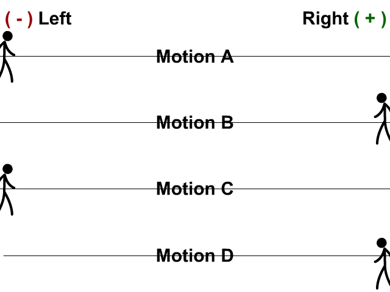
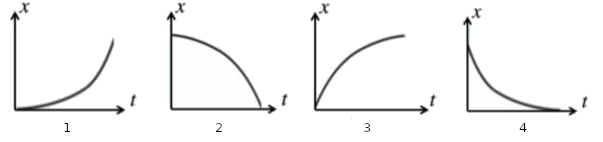

2. Accelerated Motion
Overview
Accelerated motion describes when an object's velocity is changing. In this unit, we will consider cases with constant acceleration.Slides
Skills and Understanding
- Understand that acceleration is the rate of change of velocity and know how it affects the motion of an object.
- Analyze graphs of position, velocity, and acceleration.
- Apply kinematic equations to solve problems including freefall.
Equations
\[ \begin{array}{cc} v = \frac{\Delta x}{\Delta t} \quad \quad \quad \quad & v_{f} = v_{i} + a \cdot \Delta t \\ a = \frac{\Delta v}{\Delta t} \quad \quad \quad \quad & \Delta x = \frac{1}{2} \left( v_{i} + v_{f} \right) \Delta t \\ v_{avg} = \frac{v_{i}+v_{f}}{2} \quad \quad \quad \quad & \Delta x = v_{i} \Delta t + \frac{1}{2} a \Delta t ^{2} \\ \quad \quad \quad \quad & v_{f}^{2} = v_{i}^{2} + 2 a \Delta x \end{array} \]Vocabulary
- Acceleration \(a\) is the rate at which velocity changes. It is calculated as \(a = \frac{\Delta v}{\Delta t}\)
- Displacement is the change in position from the start to the end of a path. Given an initial position \(x_{i}\) and final position \(x_{f}\), the displacement \(\Delta x\) is calculated as \(\Delta x = x_{f} - x_{i}\)
- Freefall describes when an object is falling due to gravity alone.
- Velocity is the rate at which position is changing. It is calculated as \(v = \frac{\Delta x}{\Delta t}\)
2.1 Acceleration
Acceleration is change in velocity per time, \[ a = \frac{\Delta v}{ \Delta t} = \frac{v_{f} - v_{i}}{\Delta t} \ \]2.2 Position versus Time Graphs and Acceleration
When velocity was constant (acceleration was zero), position versus time graphs were linear. That was inline with our understanding that velocity was the slope of the position versus time graph, and constant slope results in a straight line. Now that we are considering acceleration, velocity is changing, so our position versus time graphs will no longer be linear.
Given the four samples of motion below, consider these questions:
- Is the velocity positive or negative?
- Is the acceleration positive or negative?
- Is the person speeding up, or slowing down?
- What would the graph of position versus time look tike?
 Match each of the motion samples above to one of these position versus time graphs:

2.3 Velocity versus Time Graphs
2.4 Kinematic Equations
Assuming constant acceleration, there are four common equations: \[ v_{f} = v_{i} + a \cdot \Delta t \] \[ \Delta x = \frac{1}{2} \left( v_{i} + v_{f} \right) \Delta t \] \[ \Delta x = v_{i} \Delta t + \frac{1}{2} a \Delta t ^{2} \] \[ v_{f}^{2} = v_{i}^{2} + 2 a \Delta x \] Each of these equations is useful in a different way. Note that the first equation has no \(\Delta x\), the second has no acceleration \(a\), the third requires no \(v_{f}\), and the last has no \(\Delta t\).
When presented with a kinematic physics problem, identifying the Givens and the Unknown helps us to choose the appropriate Equation to use.
2.5 Freefall
Freefall describes when an object is accelerating due only to gravity. The acceleration due to gravity at the surface of Earth is approximately -9.81 m/s\(^{2}\), but we'll often use the value \(-10\) m/s\(^{2}\).